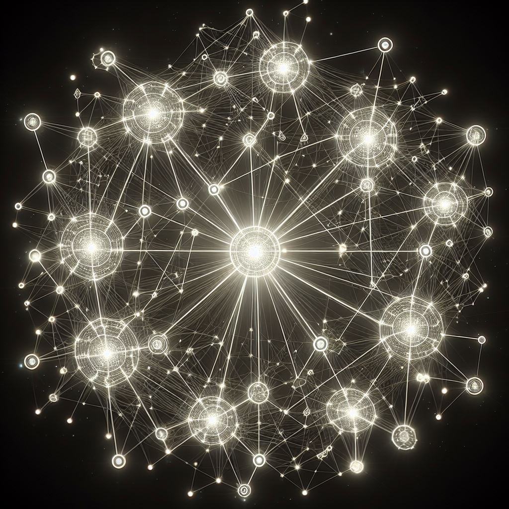

THIS PAGE IS A WORK IN PROGRESS

Rewrite Your Future
Take what you’ve learned so far, and use it
to change your idea of your future.
To become the person we want to be, we will go
through a complex combination of steps including
steps of healing, remembering, dreaming,
regrouping, feeling lost, feeling angry, and then
coming back again and again to what it is that
drives you.
It’s not too hard to opt-out if you have
enough support. And this network is providing the
extra support needed to those who don’t
already have a network, just as we all do when we
are starting something.
Do you ever fantasize about a world in which
restrictions currently in place don’t hinder
you at every turn? Do you have a “realistic
plan” and yet also an idea for how much
greater your impact would be if there was just
more freedom in the world? We are on the path to
the creation of that world today. We achieve this
by continuing to act as free and sovereign
individuals while broadening our network so that
we can begin to see the results of our efforts to
make the world a better and safer place for future
generations.
Imagine a world with only voluntary interactions.
It’s hard to imagine that every claim to
authority ever feigned could easily be shown to be
completely falsified, but it is just that simple.
You cannot prove that you have authority over
another man or his property.
The goal is to become aware of which areas you
want to advance in your life to maximize your
machine and thus your effect on freedom
everywhere.
Our own energy and attention are our most
ill-utilized resources. Our own worth is used
frivolously, starting from the levels of
government indoctrination centers many attend from
a young age. Even simpler than this is the fact
that humans are told that they are in debt since
birth, racking up carbon footprint murder points
for making simple self-care choices like taking a
shower for longer than 5 minutes.
Not only do we, as humans, provide essential
nutrients to the ground, but the breath we exhale
is all in perfect alignment with the world around
us. We propagate new crops and create paths and
shelter that can be utilized by other creatures
when we are gone. Never once do we step outside of
line with this harmony until we promote those
things that restrict and limit human free will and
ingenuity. (destruction of freedom) We value
humans who overcome these restrictions.
Most of all, we value voluntaryists (people who
follow the ZAP) who wish to manifest freedom
beyond just themselves and their own situation.
We also value individuals who wish to circumvent
the “state” through counter-economics
(a.k.a Agorism) that take measures to prevent
their wealth, once exchanged for other things of
value, from landing in the hands of evil
people.
Get Involved Today
For those who want to get involved but don’t
know how that would look, you don’t have to
go far. We are creating meetups in every city
along our trade route. Soon, you will go to
voluntaryist events in a rotation of cities or go
to one in your hometown.
If you are ready to leave your situation today,
the caravan is the most immediate form of aid. We
have 5 vehicles and the mobile camping
infrastructure setup available where we can share
resources in a loose, slow-moving caravan with the
aim of ending slavery today through education,
agorism, and encouraging the connection between
new and already made alternative networks.
If you want a stationary option, there are many
agorist locations that will help you along the
path towards freedom. These are listed in Chapter
3, Transcending Location.
Create Your Role
The character classes we were presented with in
the current world are flawed. We were born into
a world corrupted with prevalent lies such as
the existence of “authority over
others”. Most of us, in order to become
successful and remain “legal” (aka
“politician-approved”) in the eyes
of the government, require expensive licenses,
taxes, and other advertising barriers that make
it hard to succeed in the modern world.
Following in the footsteps of the generations
before us, the new generation is already
eschewing the lie of secondary education. It is
very mainstream now to hear stories of people
succeeding without a college degree or tons of
money to start off with. But the stories we hear
are of people who succeeded
despite the landmines thrown into their
path by the government that is supposed to be
serving them.
Robin Hood aside, stories about people who live
completely outside of the bounds of governmental
restrictions are often told in the form of
horror stories and usually have a bad ending. We
are told to fear being cast out by society and
that the only way to really survive is to obey
every law that is decided for us by unknown
individuals under the guise of our fellow man.
Fear leads many into hiding and seeking absolute
isolation in response to knowledge of the
reality of the world right now.
Everyone has their own unique combination of
skills and interests, and each person's
character class will be something that they
discover over time, and name, if they choose.
Any title is just a snapshot, only approximating
a description of the whole person who is always
growing and updating their own understanding of
themselves and what they are here to do.
Choosing a vocation does not have to be so
expensive and take such a long time before a
person can even start practicing their trade.
Apprenticeships are all but nonexistent in most
fields because of the current system but can be
a great way for a person to make a small living
while learning whether they would like to pursue
a craft further.
Everyone deserves some time to detox from
society and decide what they would be doing with
their lives if they really had the freedom to
create a life they wanted to live. This.
Involves trying their hand at different skills
and living in different environments. It also
includes and requires a detox from the nervous
system fake out which is the modern-day
measuring stick of success in the cities of
America.
a lifestyle maximized for freedom.
Whatever roles you want to play in the world,
short or long-term, you are capable of creating
the best plan for how those roles will be played
out. You may want to learn from others for a time,
but eventually, you will trust your own expertise
on the subject and will be the one best suited to
the task of planning your method and approach.
The current system has us doing all kinds of
acrobatics with licenses, restrictions, and taxes
that create bars to entry in most major
industries. We have the power to step away from
these issues, but we need to also have a market to
step into - a demand for our services. That is the
purpose of the network. You can create a new name
for your profession or just a new description of
the possibilities within it.
The network we are working on opposes the idea of
keeping a profession that funds the state.
That’s why we are working to expand the
number of jobs available within the network that
meet these criteria: they do not fund the state or
people who fund the state. Eventually, this will
look like all participants in all transactions not
funding the state with their shelter, job, food,
or leisure activities.
The system is rigged so that we can’t spend
our time in a way that is constantly bettering our
situation. In order to better our situation, we
must get a job. But a job is stagnant - in
general, it does not allow you to constantly
innovate how you spend your time and how the job
works. Not only do jobs promote stagnant time in
our day, but a person must be perceived as stable
to get most jobs.
A job in itself is not bad. But the common
understanding of a job is tied to a common
understanding of the world - in which all commerce
must be tied to the state under threat of
punishment. It is rare that the actual time and
activities spent in a day align with a
person’s ideal working environment. We may
earn wealth, but what we are doing to grow
ourselves toward our greater selves is often
limited if we choose to seek money over spending
time growing ourselves in other ways.
In the current paradigm, we can’t easily
spend our time in a way that is constantly
bettering our situation.
In order to better our situation, we must get a
job. But a job is stagnant - in general, it does
not allow you to constantly innovate how you spend
your time and how the job works.
Not only do jobs promote stagnant time in our day
once we have one, but to get most jobs a person
must be perceived as stable.
You must often have a house or several that you
homestead on a regular basis (rent or mortgage
usually being a requirement of further government
certification associated with most accepted
jobs).
Society shuns those who don’t adhere to
these norms. Or if a person does support companies
that break these standards - it is from a couch,
by definition - because there is not yet a network
filling the gap and providing for them a way to do
things better.
If you haven’t dug a deep hole into the
business of paying for government
‘licenses’ and ‘taxes’,
you won’t be so devastated when the tides of
business change and break free from these chains.
It is easy to surmise that there are many health
reasons to avoid repetitive physical or mental
tasks such as standing still for long periods of
time with your focus somewhere else. But there are
many more problems when it comes to the modern-day
workweek than just these. It’s not only that
we should be able to find work that is seamless
with whatever life we want to live - we
don’t have to work to live at all if we
don’t want to. Our network makes this
possible with structures like freedom properties.
We must live out our wildest reality - for only
those actions will create the world we want to
live in and inspire others through.
Whatever job you have, it can translate into the
agora.
Any profession can be transferred to an agorist
modality. So rather than changing the names of
professions, it’s about transforming the
day-to-day realities of those positions.
It’s about being able to make decisions that
fit our own personal moral framework (so long as
it follows the ZAP). Thus, our lives and positions
will mean the things we want them to mean - and
effect the change we want to affect. We can live
in a world where everyone is empowered to make
their own voluntaryist mark upon the world.
The potential life paths we are presented with in
school and by our family and peers are flawed.
Most of our dreams, in order to become big and
remain ‘legal’ in the eyes of the
government, require expensive licenses, taxes, and
other advertising barriers that make it hard to
succeed in the modern world where every minute of
screen time is bought.
Following in the footsteps of the generations
before us, The new generation is already
recognizing the lie of secondary education. It is
very mainstream now to hear stories of people
succeeding without a college degree or tons of
money to start off with. But the stories are of
people who succeeded despite the land mines thrown
into the path of the everyday person by the very
government that is supposed to be serving them.
Why aren’t we hearing more about the
government’s direct connection with
suffering? Because then we might realize it
doesn’t need to exist.
We are told horror stories of people cast out by
society and told that the only way to really
survive is to do it while obeying every law that
is decided for you by unknown individuals under
the guise of your fellow Americans.
Everyone has their own unique combination of
skills and interests, and each person's character
classes will be something that they discover over
time, and create new names for if they choose;
which only approximates a description of the whole
person who is always growing and updating their
own understanding of themselves.
Everyone deserves some time to detox from society
and decide what they would be doing with their
lives if they really had the freedom to create a
life they wanted to live. This involves trying
their hand at different skills and living in
different environments. It also includes and
requires a detox from the nervous system overload
which is the modern-day measuring stick of success
in the cities of America.
-
Individualist - picks jobs to suit their
needs
-
Bounty/Bountiful Hunter
-
Caravaneer
-
Mobile Mechanic
-
Environmental Insurance Agent
-
Charity Organizer
-
Cartoonist
-
Ranger/Warrior for light
-
Healer
-
Grid Worker
This is a jumping-in section where you can select
what type of lifestyle you want to be living and
we will help you decide how to get into the
network.